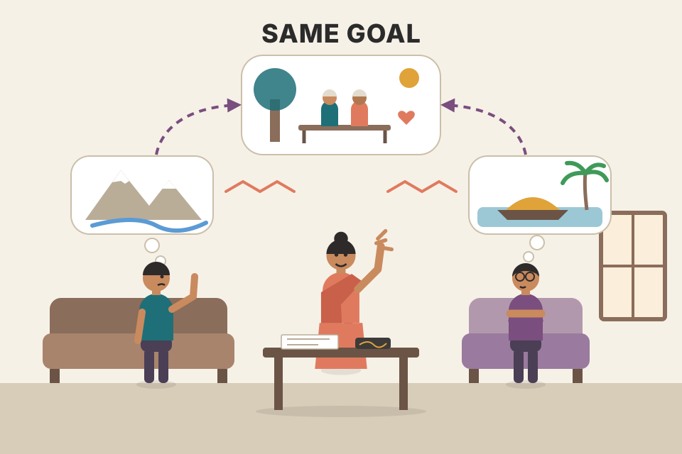
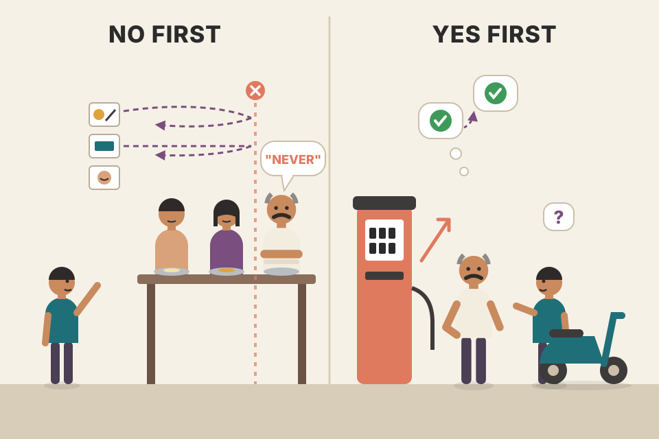
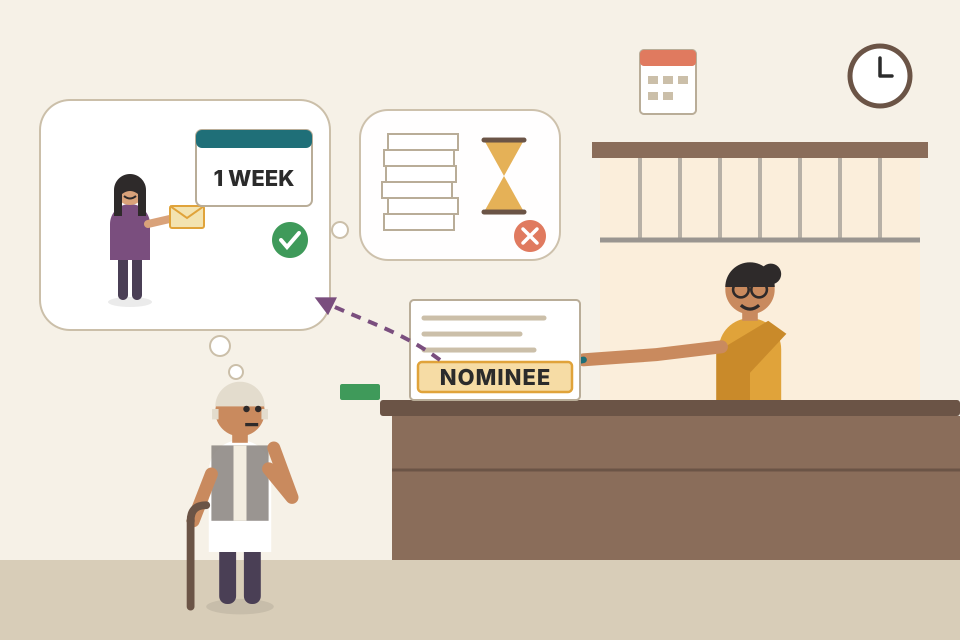
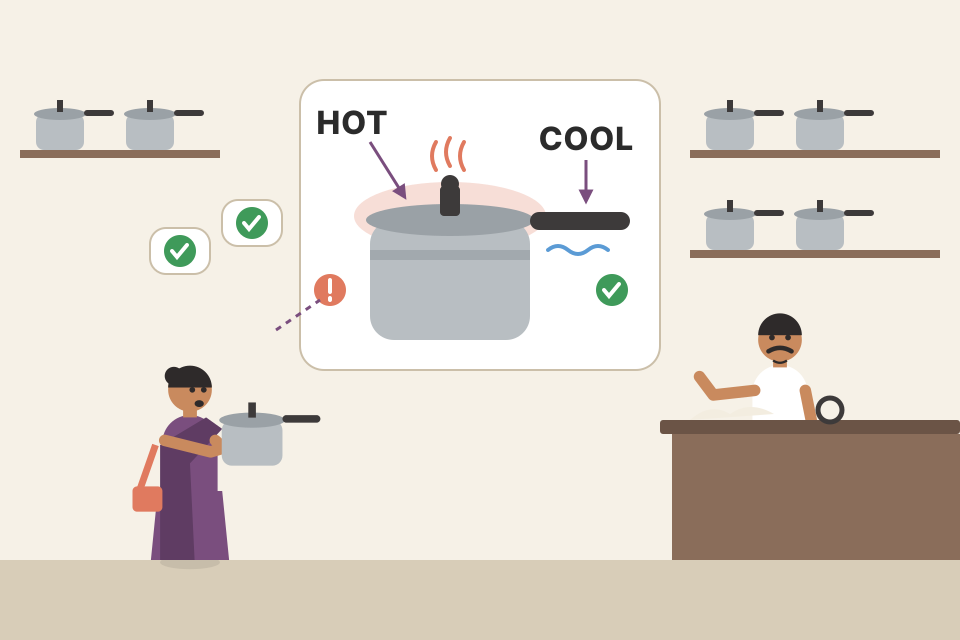
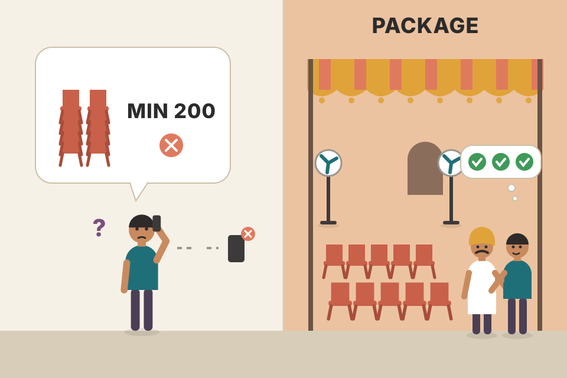
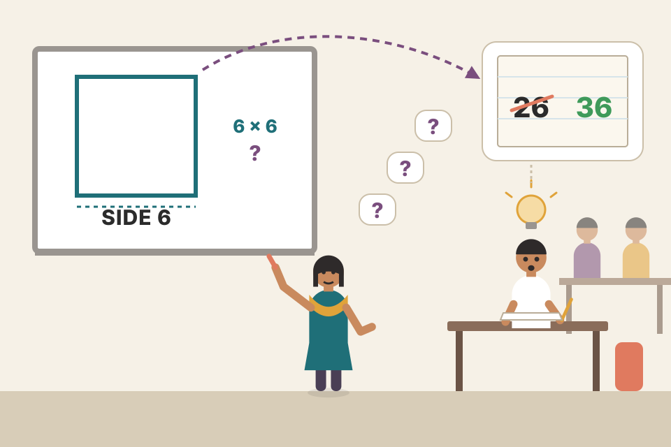

DALE CARNEGIE · HOW TO WIN FRIENDS · PART THREE · CHAPTER 5 · PDF p155–160
The Secret of Socrates
Open a disagreement on the ground you share, not on the point you dispute. Every early "yes" makes the next one easier; one early "no" can lock the whole conversation.
This is one of the shortest chapters in the book, and one of the most practical. Carnegie's claim is that the first few seconds of a disagreement decide most of it: once a person has said "no", their pride needs them to keep saying it, so a good persuader collects a string of honest "yes" answers first. He backs it with a psychologist's account of what a "no" does to the whole body, then three short cases: a bank teller who saved a prickly new customer, a salesman who rescued a large order from a complaint that his motors ran "too hot", and a bow shop that turned a refused rental into a loyal customer. He ends with Socrates, who changed the course of philosophy by asking questions his opponents could only agree with, one after another, until they reached a conclusion they had rejected minutes earlier.
Principle 5 of Part Three
Get the other person saying "yes, yes" immediately.
How the chapter fits together
pdf p155–160 · read this first
Where it sits. This is the fifth of the twelve chapters of Part Three, "How to Win People to Your Way of Thinking" (ch10 to ch21). The first four principles of the Part cleared the ground: avoid arguments (ch10), never tell someone they are wrong (ch11), admit your own errors quickly (ch12), and begin in a friendly way (ch13). This chapter is the first one that gives you a move rather than a thing to stop doing: a way to steer the conversation once it has started in a friendly tone. It leads straight into the next principle, let the other person do a great deal of the talking, and later into let them feel the idea is theirs, which is where a good chain of "yes" answers naturally ends up.
The argument as a chain. Each row reacts to the one before it.
Problemwe open with the point we disagree on→the other person says "No"
Why it stickspride demands consistencybilliard ball keeps rollingthe whole body braces to reject→a "No" is very hard to reverse
The movestress shared goals→differ on method, not purpose→collect early "yes" answers
ProofEberson's bank formAllison's "too hot" motorsEddie Snow's bow set→refusal turns into a bigger yes
ModelSocrates: questions they must agree with→an "armful of yeses"→Principle 5
Limitsthe yeses must be honest and the goal truly shared→otherwise it is a sales trick, and people feel it
About the title: Carnegie saves Socrates for the end of the chapter, as the most famous user of the method. The "secret" is not a hidden trick; it is simply the order in which you say things.
01 · THE OPENING RULE
Start where you agree, and keep coming back to it
pdf p155
The chapter opens with no story at all, just the instruction, stated in three parts. Read them as a sequence you can follow in any disagreement:
Do not open with the difference. The point you disagree on is the one thing guaranteed to put the other person on guard, so it should not be the first thing they hear.
Open with what you agree on, and keep repeating it. Carnegie does not say "mention it once". He says stress it at the start and keep stressing it as you go.
Frame the gap as method, not purpose. Wherever you honestly can, make it clear that you both want the same end result, and that the only question between you is how to get there.
Then the concrete version: get the other person saying "yes, yes" at the very start, and do everything you can to keep them from saying "no". The next plate explains why the first word matters so much.
Difference of purpose
"You want to ship fast; I want it safe." It sounds like two people pulling in opposite directions. One of them has to lose.
Difference of method
"We both want this out by Friday without paging anyone at night. I'm not sure we get both without a canary." Same goal; only the route is open.
Dated wording. Carnegie calls the other person your "opponent" in this chapter. In a team setting it is better to think "the person I disagree with", which is closer to his own point: you are not really opponents if you want the same thing.
Picture it

Two brothers in a joint family argue about where to take their parents on holiday: one wants Rishikesh, the other wants Kerala. Ten minutes of "no, Kerala is too far" goes nowhere. Then the elder sister cuts in: "You both want Amma and Appa to rest, see something beautiful, and not get exhausted on the way, yes?" Both nod. Now they are comparing train times and walking distances, not defending their own picks.
Where it breaks: the sister found a goal that was really shared. If one brother secretly wants Rishikesh because his friends are there, the "same purpose" frame is false, and stressing it will feel like a trick once it comes out.
What's happening behind it
The book's explanation: when people hear first what they agree with, they hear you as being on their side, and the disagreement shrinks to a practical detail. When they hear the difference first, the whole conversation becomes a contest.
Beyond the book: negotiation research says the same thing in other words. Roger Fisher and William Ury's Getting to Yes (1981) tells negotiators to separate interests (what each side actually needs) from positions (the specific thing each side asked for). Two people with opposite positions often share most of their interests, which is exactly the "same end, different method" frame.
At work
Before a design debate, write one line both sides would sign: "We want p99 latency under 200 ms, and we want to avoid a second database to run." Put it at the top of the doc and say it out loud at the start of the meeting. When the argument drifts into "your design is wrong", point back at the line: "We agree on this; we're only choosing how."
Interview angle. "Tell me about a time you disagreed with your manager." Strong answers usually begin with the shared goal ("we both wanted the migration done before the peak season") and then describe the disagreement as one about approach. It shows you can disagree without making it personal.
Why a "No" is so hard to undo: Overstreet's billiard ball
pdf p155–156
Carnegie borrows the explanation from Harry A. Overstreet, a psychology professor whose book Influencing Human Behavior (1925) he cites in a footnote. Overstreet supplies three points, and Carnegie adds a fourth.
A "No" commits your pride. Once you have said no, your self-respect wants you to stay consistent with it. You may soon suspect the no was a mistake, but backing down now feels like losing face, so you defend it. That is why it matters so much that a person is started in the affirmative direction.
"Yes" answers build momentum. A skilled speaker collects several "yes" responses at the outset, which sets the listeners' minds moving forward. Overstreet compares it to a billiard ball: push it one way and it takes some force to turn it aside, and far more to send it straight back.
A real "No" is a whole-body event. When someone says no and means it, they are doing much more than saying a two-letter word. Overstreet describes the whole system (glands, nerves, muscles) gathering itself into a state of rejection, usually in tiny ways but sometimes visibly: a slight physical pulling back, or readiness to pull back. A "yes" sets off none of that; the person is open, accepting and leaning forward. So the more yeses you get at the start, the better your chance that your actual proposal gets a hearing.
Simple, and widely ignored. Carnegie adds that this is a very easy technique, yet people neglect it constantly. Many seem to get a feeling of importance from antagonizing others right at the start. And once a student, a customer, a child or a spouse has said "No", turning that bristling negative into a yes takes, in his words, the wisdom and patience of angels.
"Once having said a thing, you feel you must stick to it."Overstreet, as quoted by Carnegie (pdf p155)
Picture it

At a Sunday family lunch, your uncle announces that he will "never" buy an electric scooter. Now every fact you offer (running cost per km, the subsidy, the neighbour's happy experience) has to beat not just his doubt but his public word in front of the whole table. Had you asked him first whether he is tired of petrol prices and whether he would like a cheaper daily ride to the market, he would have said yes twice before the word "electric" came up at all.
Where it breaks: a billiard ball has no memory of being pushed. A person does: if they later feel the yeses were steered, the momentum reverses and you lose trust as well as the point.
What's happening behind it
The book's explanation (through Overstreet): two forces. Pride wants us to stay consistent with what we have already said, and the body itself shifts into a guarded, withdrawing state when we refuse. Both make the first answer far more important than any later one.
Beyond the book: modern research supports the consistency part well. Robert Cialdini's Influence (1984) describes commitment and consistency as one of the strongest pressures in persuasion, especially for commitments made aloud or in public. The classic foot-in-the-door study (Freedman and Fraser, 1966) found that people who first agreed to a small request were much more likely to agree to a larger one later. The whole-body "rejection state" is Overstreet's 1920s description; it is plausible as a picture of defensiveness, but it should be read as an image rather than a measured physiological finding.
At work
Watch the first reply in a PR thread. If the first comment is "This approach won't work", the author's next ten comments will defend the approach, because they are now defending their first answer as well as their code. If the first comment is "The retry logic is exactly what we needed. Can we agree the cache should never serve data older than a minute?", you have a yes on the goal before you raise the stale-cache bug.
Notice the same thing in yourself: when you say "no" quickly in a meeting, notice how hard it is to change your mind ten minutes later in front of the same people. Saying "let me think about it" instead of an instant "no" keeps your own ball from rolling the wrong way.
Which opening? (keep them out of "No")
Pick an opening line to see how Carnegie would judge it.
Connects to
Why an argument, once started, makes each side more certain: Part Three, Ch.1.
Saving face so people can change their mind without losing pride: Part Four, Ch.5.
03 · THE FIRST CASE
James Eberson and the customer who would not fill in the form
pdf p156–157
The first story is small and ordinary, which is the point: a bank counter, a form, a customer who will not cooperate.
James Ebersonteller, Greenwich Savings BankNew York Citya new account
The situation. A young man came in to open an account. Eberson handed him the bank's standard form. He filled in some questions readily but flatly refused to answer others.
The old habit. Eberson admits that before he studied human relations he would simply have told such a customer: give us this information or we cannot open your account. He says he is ashamed he had done exactly that in the past. It felt good at the time: he had shown who was in charge and that the bank's rules were not to be ignored. But it gave no sense of welcome or importance to a person who had walked in to bring the bank his business.
The new move. That morning he decided to talk about what the customer wanted rather than what the bank wanted, and to get a "yes" before anything else. He conceded that the refused details were not essential. Then he raised the one thing the man plainly did care about: what should happen to his money, and who should receive it, if he died. Agreeing to that was easy, and naming his next of kin followed from it.
The result. Once the young man saw the information was being asked for his sake, not the bank's, his whole attitude softened. Before leaving he had given complete information about himself, opened a trust account at Eberson's suggestion with his mother as beneficiary, and happily answered all the questions about her too. Eberson's own summary: with the "yes, yes" start, the customer forgot what he had been resisting and was glad to do everything suggested.
Look at what Eberson did not change. The bank still got the information it needed, and more. What changed was the first sentence (agreement instead of an ultimatum) and whose interest the questions served.
Picture it

A clerk at a post office savings counter in Pune asks an elderly man to fill in the nominee column. He waves it away: "Why does the government need to know my family?" The clerk smiles: "You're right, the account opens without it. But if something happens, would you want your daughter to get this money in a week, or after months of court papers?" "In a week, obviously." "Then her name here does exactly that." He fills in the column and asks about a second account for his grandson.
Where it breaks: the nominee field really is in his interest, so the yeses are honest. If the clerk used the same warm questions to push a high-fee insurance product he does not need, it would be the same technique doing harm. The method works on anyone; it is only good when the thing you lead them to is good for them.
What's happening behind it
From the book: two things changed at once. Eberson stopped asserting the bank's authority (which made the customer feel small and gave him a reason to say no) and started from what the customer wanted (his money going safely to his family). The first "yes" was easy because it was obviously true; each later one followed from it.
Eberson also notices the hidden reward of the ultimatum: it felt good to show who was boss. That ties back to Carnegie's remark in plate 2 that people often antagonize others because it makes them feel important.
Beyond the book: marketers call Eberson's switch "reframing the benefit": the same request ("give us a name") becomes attractive once it is described as serving the person asked.
At work
Your team owns an internal platform, and a product team refuses to fill in the service-registration template ("we don't have time for paperwork"). Instead of "no registration, no deploy", start where they agree: "You'd want the on-call person to know who to wake up if your service breaks at 3 a.m., right?" Yes. "And you'd want alerts routed to your channel, not to the general one?" Yes. "That's exactly what these three fields do." They fill it in, and often ask for the dashboard template too.
Interview angle. "Tell me about a time you got another team to adopt a process." The Eberson shape makes a good answer: they resisted, you stopped quoting the rule, found the part that served them, and they ended up doing more than the minimum.
Rewrite it
Pick a blunt message, decide how you would open it with a "yes", then reveal a Carnegie-style version and what changed.
Making people feel welcome and important rather than ruled: Part Two, Ch.6.
04 · THE SALES CASE
Joseph Allison and the motors that were "too hot to touch"
pdf p157–158
The second story raises the stakes: thirteen years of effort and a large order, nearly lost over one complaint. It is also the clearest example in the chapter of a chain of yes answers, each one built on the last.
Joseph Allisonsales rep, Westinghouse Electric13 years of callsabout $35,000 of orders
The long wait. One firm in Allison's territory was a customer Westinghouse badly wanted. His predecessor had called on them for ten years without a single sale. Allison kept calling for three more years, again with nothing. Finally, after thirteen years in all, the firm bought a few motors. If those worked well, Allison expected an order for several hundred more, and he was sure they would.
The shock. Three weeks later he called again, cheerful, and the chief engineer, a Mr Smith, told him flatly that he could not buy the rest. The reason: the motors ran too hot; he could not keep his hand on them.
The choice. Allison knew from long experience that arguing would get him nowhere. So he went for the "yes, yes" response instead.
Step through the conversation
The arithmetic that did the persuading. Allison never said "you're wrong". He let the engineer supply each number and do the sum himself:
Step
Fact the engineer agreed to
°F (book)
°C (our conversion)
1
Motors should not run hotter than the National Electrical Manufacturers Association standard
(the rule)
2
That standard allows a properly designed motor to run this much above room temperature
+72°F
a rise of +40°C
3
The mill room is about
75°F
about 24°C
4
So a motor within the standard can reach
75 + 72 = 147°F
about 64°C
5
Water from a tap at that temperature would scald your hand
yes
yes (hot enough to burn in seconds)
Conversions are ours: a temperature rise converts by ×5/9 (72°F of rise = 40°C of rise), while an actual temperature uses (°F − 32) × 5/9. Beyond the book: a 40°C rise over room temperature was long a common standard limit for general-purpose motors, so Allison's figure matches the rules of his day.
The ending. The last question was the gentlest: would it not be wise, then, to keep his hands off the motors? The engineer admitted Allison was right. They chatted a while longer, and then he called his secretary and placed about $35,000 of business for the next month.
Allison's lesson, in his own reckoning: it had taken him years and cost him uncountable thousands of dollars in lost sales to learn that arguing does not pay, and that it is far more profitable (and more interesting) to see things from the other person's viewpoint and get them saying "yes, yes".
"I agree with you a hundred percent."Allison's opening reply to the complaint, as quoted by Carnegie (pdf p157)
Picture it

A customer at a pressure-cooker shop in Chennai comes back angry: the new cooker's handle is "dangerously hot". The shop owner does not say "that's normal, madam". He agrees: "If it's hotter than it should be, you must return it. You'd want the body to be steel and the handle to stay cool, yes?" Yes. "And the handle stays cool, only the lid gets hot when the whistle goes, right?" She thinks. "Yes, it's the lid I touched." "Then a cloth on the lid, and you're safe." She buys a second gasket on the way out.
Where it breaks: Allison's motors really were within the standard, so the facts were on his side. If the cooker handle truly were faulty, a clever chain of questions would only talk her out of a fair complaint. The method should reveal the truth, not hide it; check the motor before you build the chain.
What's happening behind it
From the book: the engineer had already said "No" (I can't buy more). A direct counter-argument would have forced him to defend that no. Allison went around it: he agreed with the principle behind the complaint (motors that run too hot should not be bought), which put the engineer on the "yes" side, then let him reach the new conclusion through his own numbers. The engineer never had to admit he was wrong; he only had to agree with things he already believed.
Beyond the book: people trust conclusions they reach themselves far more than conclusions handed to them. Psychologists call one version of this the self-persuasion effect (Elliot Aronson's work): arguments people generate in their own heads change attitudes more, and for longer, than the same arguments heard from someone else.
At work
A client escalates: "Your API is too slow, we're moving to another vendor." Do the Allison move. Agree with the principle: "If it's slower than what we promised, you shouldn't stay on it." Yes. "Our contract says p95 under 300 ms, measured at our edge?" Yes. "Our dashboard shows 180 ms at the edge. What do you see from your side?" Often the answer is "about 900 ms", and the gap turns out to be their own proxy in another region. You both now look at the same chart, and the conversation is about fixing their path, not defending your API.
Interview angle. "Tell me about a time you handled an angry customer or stakeholder." Show that you agreed on the standard first, let them check the facts against it, and that the fix (or the reassurance) came from data you looked at together, not from you winning the argument.
Worked example: the "this is too slow" bug report
Argue the conclusion
"It's not slow. Our benchmarks are fine. You must be testing it wrong."
Three claims, each one a "no" to the reporter. They will defend their test, and you will defend your benchmark.
Build the chain
"Agreed, if search takes more than a second that's a bug. Are you testing with the production index? And is it the first search after login, or every search?" ... "Only the first one? Then I think we're seeing the cold cache. Want to check the second request together?"
Each question is easy to say yes to. The reporter finds the cause with you, and nobody had to be wrong.
Connects to
Allison's last line, "see it from the other person's viewpoint", is a full principle: Part Three, Ch.8.
Eddie Snow and the bow that was no longer for rent
pdf p158–159
The third story is told from the other side of the counter: what it feels like to be the person led through a run of yeses, when it is done well. Both shops in it say exactly the same thing ("we don't rent bows"). Only one of them keeps the customer.
Eddie Snowsponsor of Carnegie courses, Oakland, Californiarental $25–30set $34.95
The situation. Eddie had taken up bow hunting and spent a good deal of money on equipment at a local bow store. When his brother came to visit, Eddie wanted to rent a bow for him from the same store.
Shop one. The clerk simply said they did not rent bows. That was the end of the conversation, so Eddie phoned a different store.
Shop two. A friendly man there gave the same answer, with an apology and a reason: rentals no longer paid for the shop. But he did not stop at the refusal. He asked Eddie about his own past rentals and what they had cost, and whether he liked a bargain, all things Eddie was happy to agree with. Then came the offer: a complete bow set on sale for $34.95, only $4.95 more than a rental, which was exactly why the shop had dropped rentals.
The result. Eddie bought the set. When he went to collect it he bought several more items, and he became a regular customer of that shop.
Why this story is in the chapter. Shop two's answer to the request was still "no". But it never let the customer say no. The man led with an apology and a reason, then asked three questions Eddie was glad to agree with, so that when the real offer came, saying "yes" felt like the natural next step. Shop one gave a correct answer and lost the customer; shop two gave the same answer and gained one.
Shop one
"We don't rent bows." Correct, short, and the customer is gone. Nothing was offered in place of the no.
Shop two
Apology and reason → a few questions Eddie agreed with → an offer better than renting → sale, extra items, regular customer.
Picture it

You call a tent-house in Jaipur to hire 50 plastic chairs for a small family function. The first one says "minimum 200 chairs" and hangs up. The second says sorry, they only do 200 now, then asks: is it for a home function? Yes. In the courtyard, maybe 40 to 50 people? Yes. Would a package with chairs, a shamiana and two fans for nearly the same price as 50 chairs elsewhere help? Yes. You book them, and you book them again for the next wedding in the family.
Where it breaks: Eddie's yeses were honest because the set really was a better deal for him. If the second tent-house padded the "package" with things you did not need, the same three questions would be an upsell, and you would not call them again.
What's happening behind it
From the book: each question confirmed something Eddie already knew about himself (he had rented, he had paid that much, he liked saving money). None asked him to accept anything new. By the time the new idea arrived, it simply followed from three things he had just said were true.
Beyond the book: the last question, "does that sound reasonable?", matters too. It hands the final decision back to the customer, so the purchase feels like his conclusion rather than the shop's push. People defend decisions they feel they made freely; this is what turned a one-off sale into a regular customer.
At work
Saying no to a feature request is the bow-rental moment. "We don't support CSV export" is shop one. Shop two: "We've stopped building one-off exports, because they kept breaking. You need the weekly numbers in a spreadsheet for finance, right?" Yes. "And you'd rather not ask us every week?" Yes. "The reporting API plus the Sheets connector does that automatically, and it costs you ten minutes once. Does that work?" The answer is still no to the CSV, and you have a happier user.
Interview angle. "Tell me about a time you had to say no to a stakeholder." Describe the shop-two shape: you explained the reason, confirmed what they actually needed, and offered a path that served it better.
Connects to
Arousing an eager want by talking about what they want (saving money), not what you want: Part One, Ch.3.
Making the other person happy about doing the thing you suggest: Part Four, Ch.9.
06 · THE MASTER OF THE METHOD
Socrates, "an armful of yeses", and Principle 5
pdf p159–160
Who he was, in Carnegie's telling. Socrates, nicknamed "the gadfly of Athens", was one of the greatest philosophers who ever lived. Carnegie says he did what only a handful of people in history have done: he sharply changed the direction of human thought. Twenty-four centuries after his death, he is still honoured as one of the wisest persuaders the world has known.
His method. Did he tell people they were wrong? Never; Carnegie says he was far too skilful for that. His whole technique, now called the Socratic method, rested on getting "yes" answers:
He asked questions his opponent could only agree with.
He kept winning one admission after another, until he had an "armful of yeses".
He went on asking until, almost without noticing, the other person found themselves accepting a conclusion they would have angrily rejected a few minutes earlier.
Carnegie's instruction. Next time we feel like telling someone they are wrong, remember Socrates and ask a gentle question instead, one that will get a "yes, yes" response.
The closing proverb. He ends with a saying he presents as Chinese wisdom, repeated twice for emphasis:
"He who treads softly goes far."Proverb, quoted by Carnegie as Chinese (pdf p159)
Dated wording. Carnegie praises "those cultured Chinese" and "the age-old wisdom of the Orient" after "five thousand years" of studying human nature. That framing (a whole civilisation as a single wise voice) reads as an old-fashioned stereotype today; it is enough to say "a proverb often described as Chinese". Likewise "only a handful of men" would today be "only a handful of people".
Principle 5
Get the other person saying "yes, yes" immediately.
The footnote (pdf p160). The chapter's only source note credits Overstreet's ideas in plate 2 to Harry A. Overstreet, Influencing Human Behavior (New York: Norton, 1925). The page holds nothing else.
Picture it

A good maths teacher at a Kota coaching centre never tells a student "your answer is wrong". She asks: "Is the area of the square side times side?" Yes. "Is the side 6?" Yes. "So 6 times 6 is…?" "36." "And you wrote?" "Oh. 26." The student finds the error himself and remembers it, and his pride is intact because he corrected his own work.
Where it breaks: the teacher already knows the right answer and the student trusts her. In a real disagreement you may be the one who is wrong, and the questions should be open enough that the other person's answers can change your mind too. Questions that only allow one answer are a trap, not a dialogue.
What's happening behind it
From the book: Socrates combines everything in the chapter. He never triggers a "no" (Overstreet's point), each yes adds momentum (the billiard ball), and the final conclusion is reached by the other person, so there is nothing for their pride to defend.
Beyond the book: Carnegie's Socrates is a simplified, friendly version. In Plato's dialogues the method (called the elenchus) often ends not in agreement but in aporia, a puzzled admission that the speaker does not know what they thought they knew, and it made Socrates many enemies. The "gadfly" label comes from Plato's Apology, where Socrates describes himself as stinging Athens awake; he was tried and executed in 399 BCE. So the real historical method was persuasive but far from soft. What Carnegie takes from it is the useful core: questions the other person must think through themselves are more convincing than statements you push at them.
At work
A teammate wants to skip the load test before the sale-day launch. Instead of "that's reckless", ask: "We expect about five times normal traffic on sale day?" Yes. "Last year the checkout service fell over at about three times?" Yes. "And we haven't changed its database since?" Right. "So what would tell us it's ready this time?" The teammate proposes the load test themselves, and owns it.
Interview angle. "How do you influence people who don't report to you?" Describe asking questions that surface shared facts and goals, so the other side reaches the conclusion with you. Avoid saying "I proved them wrong"; interviewers listen for whether the relationship survived.
Reflect, then reveal: build your own yes-ladder
Think of one disagreement you expect this week (a design choice, a deadline, a household decision). Write the outcome you want, then three questions the other person would honestly answer "yes" to, leading toward it. Nothing is saved.
Worked example: telling a senior colleague their estimate is too low
Tell them they're wrong
"Two weeks is unrealistic. There's no way the migration is done by then."
One sentence, and the colleague has a "no" to defend in front of the team: their estimate.
Ask the gentle question
"We both want this done before the freeze on the 20th, right? And the last schema migration took about a week just for backfills? Do we expect this one to be bigger or smaller?" ... "So should we plan for the backfill first and see where that leaves us?"
Every answer is a yes to something they already know. If they revise the estimate, it is their revision.
Connects to
Asking questions instead of giving direct orders: Part Four, Ch.4.
Letting the other person do most of the talking, which questions naturally lead to: Part Three, Ch.6.
Franklin's habit of never asserting opinions bluntly, the same softness Socrates used: Part Three, Ch.2.
07 · WRAP-UP
Summary and key terms
pdf p155–160
Open on agreement. Do not start with the point you differ on. Stress what you share, keep stressing it, and present the gap as one of method, not purpose.
Keep them out of "No". Overstreet: a spoken "No" commits a person's pride to staying consistent, and the whole body braces to reject. Early "yes" answers set the mind rolling forward like a billiard ball; reversing a "No" takes far more force. The technique is simple yet neglected, often because antagonizing people makes us feel important.
Eberson (bank teller): dropped the "answer everything or no account" ultimatum, agreed the details were not essential, then asked about passing money to next of kin. The customer gave full information and opened a trust account naming his mother.
Allison (Westinghouse): after 13 years of calls, a "too hot" complaint threatened the follow-on order. He agreed motors hotter than the standard should not be bought, then let the engineer add 72°F to a 75°F room (147°F, scalding) himself. Result: about $35,000 of orders for the next month.
Eddie Snow (bow store): one shop just said "we don't rent"; the other explained why, got Eddie agreeing about his past rentals (around $25–30) and liking to save, then offered a full set for $34.95. Eddie bought it, more items, and stayed a regular customer.
Socrates never told people they were wrong; he asked questions they had to agree with until they held an "armful of yeses" and a conclusion they had denied minutes earlier. "He who treads softly goes far."
Principle 5: Get the other person saying "yes, yes" immediately. Works best when the yeses are honest and the goal is truly shared.
Term or phrase
Meaning on this page
Where
Principle 5 (of Part Three)
Get the other person saying "yes, yes" immediately.
pdf p159
Method, not purpose
Frame the disagreement as about how, while both of you want the same end.
pdf p155
Started in the affirmative direction
Getting early "yes" answers before your real proposal.
pdf p155
Pride of personality
The pressure to stay consistent with a "No" once it is said.
pdf p155
Billiard ball
Momentum: easy to keep going, hard to deflect, harder to reverse.
pdf p155
State of rejection
Overstreet's picture of the whole body bracing when a person means "No".
pdf p155
Patience of angels
What it takes to turn a firm "No" into a "Yes".
pdf p156
For his sake, not ours
Eberson's reframe: the questions served the customer.
pdf p156–157
Socratic method
Questions the other must agree with, building to a new conclusion.
pdf p159
Armful of yeses
The pile of admissions Socrates collected before the conclusion.
pdf p159
He who treads softly goes far
The closing proverb: gentleness gets further than force.
pdf p159
Overstreet (1925)
Influencing Human Behavior, the chapter's source note.
pdf p160
08 · USE IT
Practice this week
beyond the book
Small exercises, each with a way to tell whether it worked. The exercises are ours; the ideas behind them are the chapter's.
Write the shared line first. Before your next design review or tricky 1:1, write one sentence both sides would sign ("we both want…"). Say it first. Worked if: the other person nods or adds to it before the disagreement starts.
Count first replies. For two days, notice how you open every disagreement: with agreement, or with "no / but / actually". Worked if: you have an honest tally, and you catch yourself before at least one "actually".
The Allison chain. When someone rejects something on a factual claim ("too slow", "too expensive"), agree with the principle behind it, then ask for their numbers instead of offering yours. Worked if: they do the sum and reach a conclusion you did not have to state.
The shop-two "no". The next time you must refuse a request, give the reason, ask two questions about what they really need, then offer a path. Worked if: they leave with a plan rather than just a refusal.
Delay your own "No". When someone proposes something you dislike, say "let me think about what we'd need for that" instead of an instant no. Worked if: you find it easier to change your mind later, or to agree partly.
One gentle question. Once this week, when you are about to say "you're wrong", ask a question whose honest answer you think is "yes". Worked if: the conversation stays friendly, and you learn something, even if it is that you were the one who was wrong.
Self-audit: this week, did I…
09 · LIMITS
Where it can go wrong
pdf p155–159 · plus beyond the book
The book's own caveats first.
"If possible". Carnegie twice adds this qualifier: stress the shared end if possible, keep the other person from saying no if possible. He does not claim every disagreement has common ground.
The yeses in his stories are true. The bank customer really did want his money to reach his family; Allison's motors really were within the standard; the bow set really was cheaper than renting twice. None of the stories works by getting someone to agree to something false.
It serves the other person too. Eberson's breakthrough was that the questions were for the customer's sake, and Allison's lesson was to see things from the other person's viewpoint. The method sits on top of real concern for their interest, not instead of it.
Beyond the book: our critique
It is now a known sales trick. The "yes ladder" is taught in sales scripts ("Do you like saving money? Do you care about your family?"). Many people recognise it and get annoyed. Trivial or leading questions feel manipulative. Use questions that are genuinely open and genuinely about them.
Do not fake shared goals. If you do not actually want the same end, saying you do is a lie, and when it surfaces you lose trust as well as the argument. Sometimes the honest opening is "we want different things here; can we find what we both can live with?"
It can shut out real objections. A chain of questions with one allowed answer can steamroll a person who has a valid point that does not fit your ladder. Leave room for "no" to be heard, and be ready to be persuaded yourself.
Power changes it. From a manager to a report, a run of "don't you agree?" questions can feel like a cross-examination, and the report may say yes out of deference. Agreement given under pressure is not agreement; check it later.
Culture shapes "yes". In many Indian and East Asian settings, people may say "yes" to be polite or to avoid conflict while meaning "maybe" or "no". A string of polite yeses does not prove agreement. Ask open questions ("what would worry you about this?") before you rely on the momentum.
The evidence is mixed. Commitment-and-consistency effects are well supported, but the strength of foot-in-the-door effects varies a lot between studies, and Overstreet's whole-body "rejection" is a 1920s description, not a measured finding. Treat the chapter as a practical habit backed by stories and some research, not a guaranteed technique.
10 · TEST YOURSELF
Check yourself
pdf p155–160
Try to answer before opening each one. The first half is recall; the second half is using the principle.
1. What are the three parts of Carnegie's opening instruction?
Don't begin with the points where you differ; begin with, and keep emphasizing, the points where you agree; and where possible stress that you both want the same end, so the only difference is method, not purpose. Concretely: get them saying "yes, yes" at the start and keep them from saying "no".
2. According to Overstreet, why is a "No" so hard to overcome?
Once said, a person's pride demands they stay consistent with it, even if they soon suspect it was wrong. And a real "No" puts the whole body (glands, nerves, muscles) into a guarded state of rejection, sometimes visibly withdrawing, while a "Yes" leaves the person open and forward-moving.
3. What is the billiard-ball comparison?
Early yes answers set the listener's mind moving in an affirmative direction. Like a rolling billiard ball, it takes some force to deflect it and far more to send it back the opposite way. So it is much easier to keep a yes going than to reverse a no.
4. Why, according to Carnegie, do people neglect such a simple technique?
Because many people seem to gain a feeling of importance by antagonizing others right at the start. And once a student, customer, child or spouse has said "No", turning it around takes the wisdom and patience of angels.
5. What did James Eberson do differently with the customer who refused to fill in the form, and what was the result?
He dropped the old ultimatum, admitted the refused details were not essential, and steered the talk to something the customer wanted: his money reaching his family if he died. After a couple of easy yeses the customer gave full information, opened a trust account with his mother as beneficiary, and answered all questions about her.
6. What did Eberson admit about the old ultimatum approach?
He was ashamed he had used it, and that it had felt good: it showed who was boss and that the bank's rules couldn't be flouted. But it gave no sense of welcome or importance to someone bringing the bank his business.
7. Retell the Allison story with its numbers.
Westinghouse had called on a firm for 13 years (10 by his predecessor, 3 by him) before selling a few motors, with several hundred more expected. Three weeks later the chief engineer refused: too hot to touch. Allison agreed motors hotter than the NEMA standard shouldn't be bought; got him to agree the standard allows 72°F above room temperature; asked the mill-room temperature (about 75°F); 75 + 72 = 147°F, hot enough to scald; so keep hands off. The engineer agreed and lined up about $35,000 of business for the next month.
8. What did the two bow shops do differently for Eddie Snow?
Both had stopped renting bows. Shop one simply said so and lost him. Shop two explained why, asked a few questions Eddie agreed with (about his past rentals, their cost, and liking to save), then offered a full set at $34.95, just $4.95 more than a rental. Eddie bought it, more items, and became a regular customer.
9. How does Carnegie describe the Socratic method?
Socrates never told people they were wrong. He asked questions his opponent had to agree with, won one admission after another until he had an "armful of yeses", and kept going until the person found themselves accepting a conclusion they would have bitterly denied minutes before.
10. Application: in a design review, a colleague says "we don't need a cache". You think you do. What is a Principle 5 opening?
Start with the shared goal and facts they will agree with: "We both want the product page under 200 ms at the sale peak? The catalogue query takes about 150 ms today? And sale traffic is roughly five times normal?" Then ask what would keep latency down at five times the load. If the answers point to a cache, they reach it themselves; if not, you learn why.
11. Application: a client says your quote is "way too expensive" and they will go elsewhere. How would Allison handle it?
Agree with the principle ("If it costs more than it's worth to you, you shouldn't buy it"), then ask for their own numbers: what the current manual process costs them per month, how many hours it takes. Let them do the comparison. Don't argue that the price is fair; let the facts they supply show it, or show you that it really isn't.
12. Application: you must refuse a teammate's request to skip code review "just this once". What is the shop-two way?
Give the reason, then ask honest yes-questions about what they need: "You need this live before the demo at 4?" Yes. "And you'd hate it to break during the demo?" Yes. "If I review it right now, in 15 minutes, does that work?" The refusal stays, and their real goal is served.
13. When does the "yes, yes" technique become manipulation?
When the yeses are trivial or leading, when the "shared goal" is fake, when the questions leave no room for a valid objection, or when the conclusion does not actually serve the other person. In all of Carnegie's stories the agreed facts were true and the outcome was good for the person asked.
14. Interview: "Tell me about a time you changed someone's mind." How does this chapter shape a strong answer?
Start with the goal you shared, describe how you opened on agreement and asked questions about facts both of you accepted, show the other person reaching the conclusion (ideally with their own data), and end with the result and the relationship intact. Avoid a story whose high point is you proving them wrong.
15. Why might a run of polite "yes" answers not mean real agreement in some teams?
In many cultures, and in any team with a big power gap, "yes" can mean "I hear you" or "I don't want conflict". Back it with open questions ("what would worry you about this?") and check agreement later in writing or by what people actually do.
11 · SOURCES
References
pdf p155–160
Book pages and other sources used on this page
Dale Carnegie, How to Win Friends and Influence People, revised edition (1981; Simon & Schuster 2009 printing), Part Three, Chapter 5, "The Secret of Socrates", pdf p155–160. By page: opening rule and Overstreet p155–156; Eberson p156–157; Allison p157–158; Eddie Snow p158–159; Socrates, the proverb and Principle 5 p159; footnote p160.
Harry A. Overstreet, Influencing Human Behavior (New York: Norton, 1925), cited in the chapter's footnote (pdf p160).
Beyond the book (named where used): R. Fisher and W. Ury, Getting to Yes (1981); R. Cialdini, Influence (1984), commitment and consistency; J. Freedman and S. Fraser, "Compliance without pressure: the foot-in-the-door technique" (1966); E. Aronson on self-persuasion; Plato, Apology (the "gadfly") and the early dialogues (elenchus, aporia); NEMA motor temperature-rise limits.